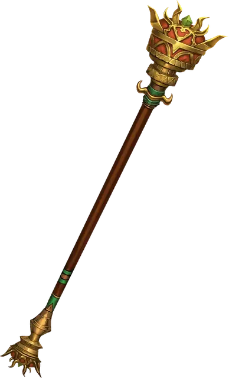

Жезл правления
Rod of Rulership
Жезл, редкий (требуется настройка)

Рекомендованная стоимость 501-5 000 зм
Вы можете действием продемонстрировать жезл и потребовать послушания от всех существ на ваш выбор, видимых вами в пределах 120 футов от себя. Каждая цель должна преуспеть в спасброске Мудрости Сл 15, иначе она станет очарованной вами на 8 часов. Будучи очарованным из-за этого эффекта, существо считает вас своим истинным предводителем. Получив урон от вас или ваших спутников, или получив приказ, противоречащий её природе, цель перестаёт быть очарованной этим эффектом. Жезл нельзя использовать повторно до следующего рассвета.